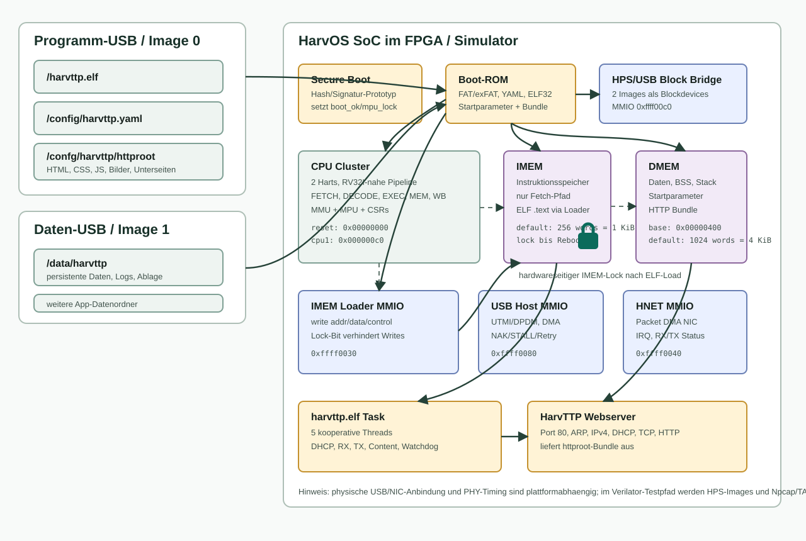

Architekturbeschreibung
HarvOS ist als kleines, beobachtbares SoC fuer Boot- und Runtime-Experimente aufgebaut. Der Kernpunkt ist eine harte Trennung zwischen Instruktionspfad und Datenpfad, damit ELF-Code in IMEM geladen und danach hardwareseitig gesperrt werden kann.

CPU-internes Schema

SoC-Blöcke
| Block | Funktion | Implementierungsstand |
|---|---|---|
harvos_cpu |
RV32I-nahe 32-Bit CPU mit lokalen CSRs, HarvOS-MMU/MPU, Traps, Fetch- und Datenpfad; nicht als vollstaendig normkonformer RISC-V-Core beansprucht. | RTL-implementiert und in Verilator-Tests verwendet. |
harvos_soc |
Top-Level-Integration mit zwei CPU-Harts, IMEM, DMEM, MMIO, DMA-IOMMU, Secure Boot, USB, HNET und HPS-Block. | RTL-implementiert; Testpfad nutzt Images und Npcap/TAP. |
harvos_smp_bus2 |
Arbitrierter gemeinsamer Datenbus fuer beide CPU-Harts. | Aktiv fuer DMEM/MMIO-Zugriffe. |
harvos_mmu |
Virtuell-nach-physisch-Pruefung mit PTE-Flags und W^X-Pruefung. | Separate Instanzen fuer Fetch und Data. |
harvos_mpu |
Feste physische Zugriffspolitik fuer I-ROM/IMEM, D-RAM, MMIO und Lock-Zustand; keine RISC-V-PMP-Implementierung. | Erzwingt Harvard-Regeln und Zugriffsfehler. |
harvos_imem_loader_mmio |
Einziger legitimer Schreibpfad in den Instruktionsspeicher waehrend des Bootens. | Nach LOCK keine weiteren IMEM-Writes bis Reset. |
harvos_net_mmio |
Packet-DMA-Netzwerkkarte fuer HarvTTP und Testsuite. | RX/TX, IRQ, Link-Status, DMA-Fenster. |
harvos_usb_host_mmio |
USB-Host-MMIO mit DMA, UTMI/DPDM-Signalen, Port-Power, Retry/NAK/STALL-Status. | RTL-seitig integriert; Mass-Storage-Stack laeuft auf Softwareseite. |
harvos_mister_hps_block |
MiSTer/HPS-kompatibler Blockzugriff auf zwei Images. | Aktueller Boot-ROM-Testpfad fuer Programm- und Daten-USB-Images. |
CPU-Mikroarchitektur
Die CPU ist keine superskalare oder out-of-order Pipeline, sondern eine deterministische Mehrzyklusmaschine. Jede Instruktion durchlaeuft Fetch, Decode, Execute und je nach Typ Memory/Writeback. Das ist fuer Boot-ROM, Low-Level-Tests und klare Hardwaredebugbarkeit passend.
| Zustand | Aufgabe |
|---|---|
ST_FETCH | PC pruefen, Interrupts/Traps erkennen, Fetch-MMU/MPU anwenden, Instruktionswort lesen. |
ST_DECODE | Registerquellen und Zielregister decodieren. |
ST_EXEC | ALU, Branch, Jump, CSR, System, Custom-0 und Adressberechnung. |
ST_MEM | Daten-MMU/MPU, Byte-Lanes, Load/Store, MMIO-Zugriff. |
ST_WB | Rueckschreiben nach rd, PC-Fortschritt. |
ST_CLRMEM | Privilegiertes blockweises Nullsetzen von Speicher ueber Custom-0. |
Harvard-Trennung
Die Architektur trennt den Instruktionsspeicher vom Datenspeicher. Der normale Datenpfad kann nicht direkt in IMEM schreiben. Ausfuehrbarer ELF-Code wird ausschliesslich vom Boot-ROM ueber den IMEM-Loader geladen. Danach setzt das Boot-ROM den Lock-Befehl. Ein laufender Server kann dann Daten, BSS, Stack und MMIO verwenden, aber keine Instruktionen nachladen oder veraendern.
Aktueller Boot- und Runtime-Schnitt
- Das SoC initialisiert IMEM per
$readmemhoder Default-ROM. - Secure Boot gibt
boot_okfrei; bei Fehler bleibt die CPU im Resetpfad. - Das Boot-ROM erkennt zwei Images, mountet sie und sucht gueltige ELF/YAML/Data-Paare.
- ELF-Textsegmente werden per IMEM-Loader geschrieben; Datensegmente gehen in DMEM.
- Das Boot-ROM baut Startparameter und optional ein HarvTTP-HTTP-Bundle.
- IMEM wird gelockt und die CPU springt zum ELF-Einstieg.
- HarvTTP nutzt HNET-MMIO und die vorab geladenen Assets.